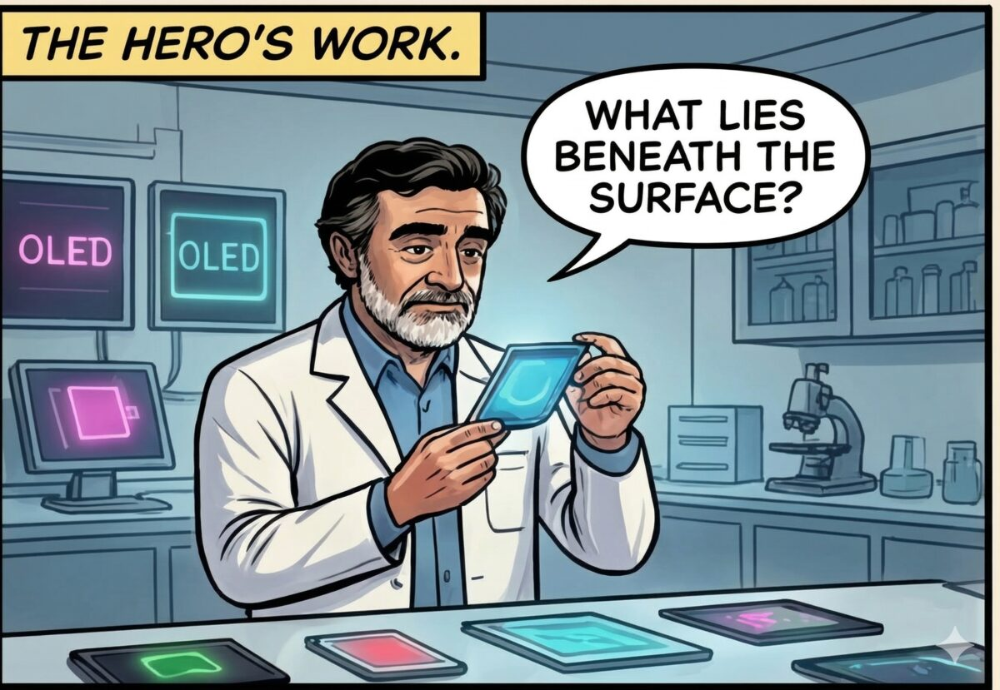
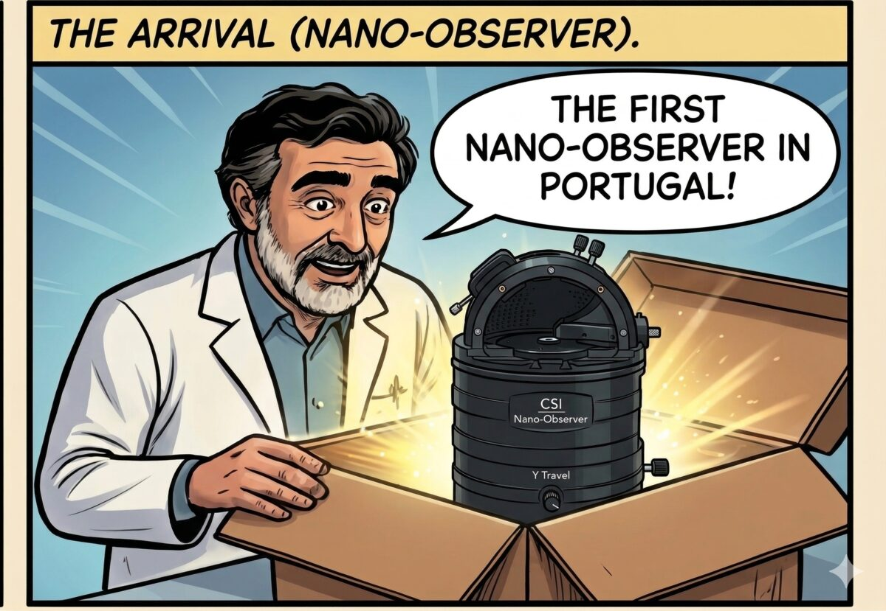
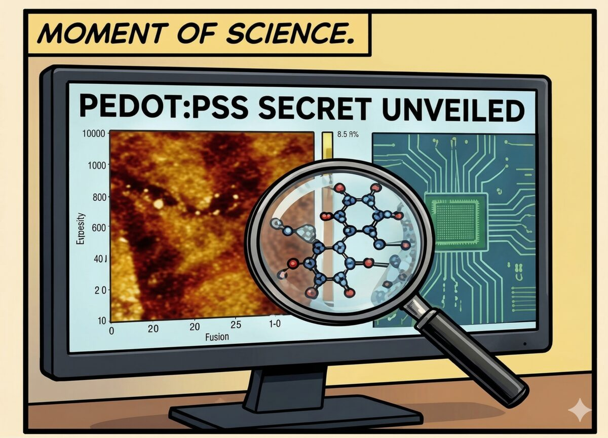
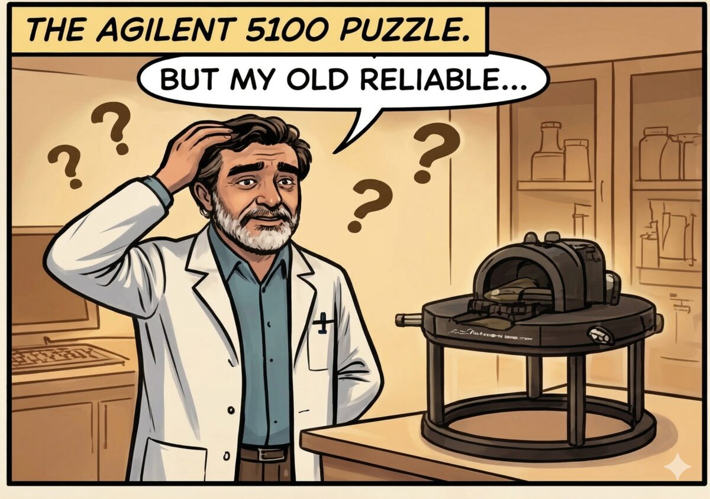
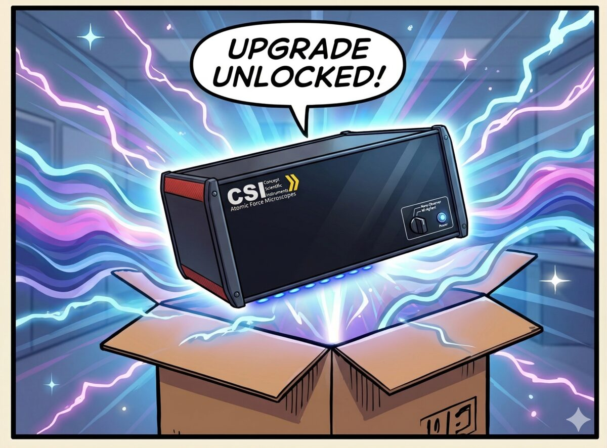
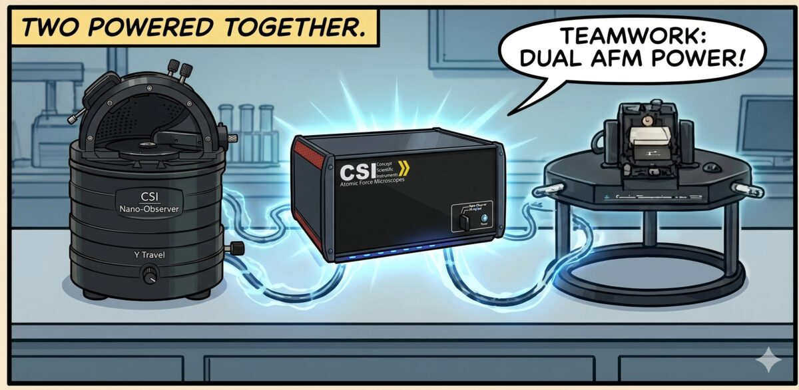
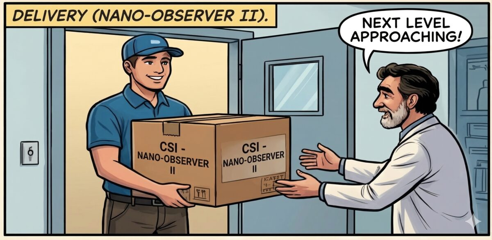
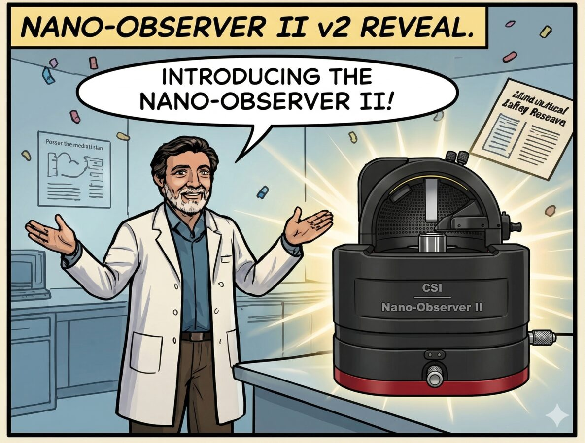
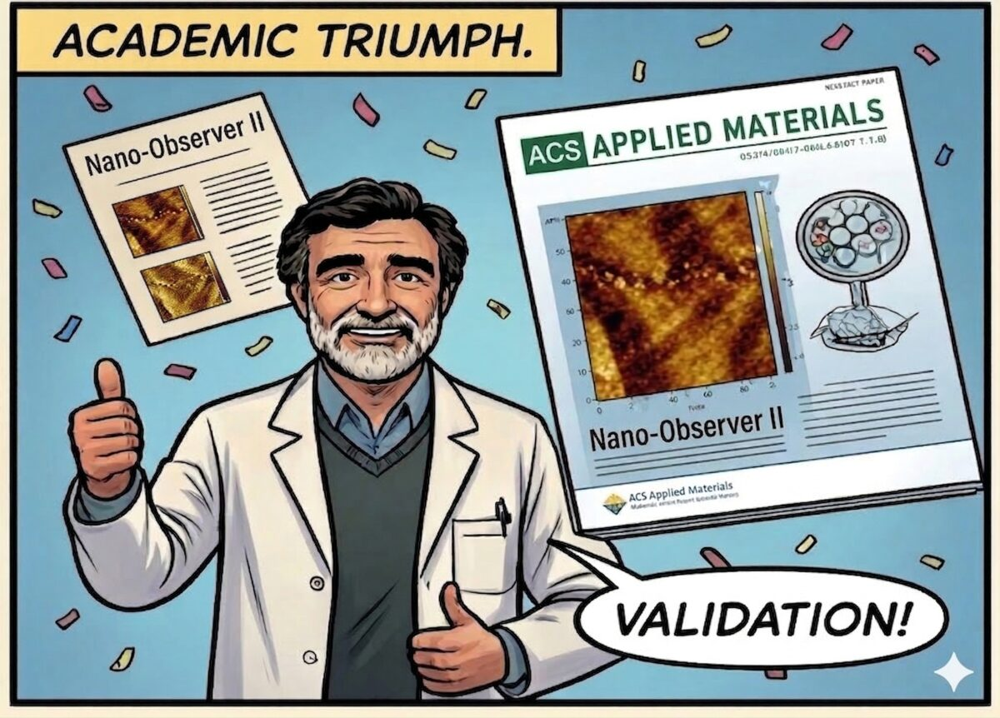

THE MORGADO
CHRONICLES
Prof. Jorge Morgado · IST Técnico Lisboa · PEDOT:PSS & the Nano-Observer Saga
★ FROM ONE SAMPLE TO ACS APPLIED MATERIALS ★
⚗️ ACT I — THE QUESTION
1

🇵🇹 University of Porto. A lab where the impossible is simply a matter of finding the right instrument.
Narrator
This is where it all began. One researcher. One question. A conducting polymer no one had ever properly imaged at the nanoscale — in Portugal.
Somewhere in the building...
Portugal's first. But first what, exactly? That part was still being written.
2

🔬 Prof. Jorge Manuel Ferreira Morgado. Full Professor, IST Técnico Lisboa. PEDOT:PSS specialist. Chronic asker of inconvenient questions.
Prof. Morgado (thinking)
PEDOT:PSS — the conducting polymer everyone uses, but no one truly understands at the nano level. Phase separation, morphology, charge transport pathways... all hidden. All waiting.
Prof. Morgado
What lies beneath the surface? That's the only question that matters.
🔭 ACT II — THE FIRST ARRIVAL
3

📦 The box arrives. A crowd gathers in the hallway. History is about to be unboxed.
Prof. Morgado
THE FIRST NANO-OBSERVER IN PORTUGAL!! Do you understand what this means?! We can finally SEE what we've only been theorizing!
Colleague
He's been tracking that shipping number for two weeks straight.
4

⚡ First scan. Then the second. Then: a moment of pure, crystalline scientific clarity.
🧬 PEDOT:PSS — SECRETS UNVEILED
MorphologyPhase-separated domains — fully resolved
Charge TransportPreferential pathways — now visible
Surface PotentialMapped at nanoscale for the first time
Previous knowledgeEducated guesses. Now: hard data.
Prof. Morgado
There it is. The phase separation. The conductive PEDOT-rich domains. The PSS-rich insulating matrix. We're not guessing anymore — we're measuring.
🔧 ACT III — THE UPGRADE SAGA
5

💭 But there was another machine in the lab. Old. Reliable. And about to become something extraordinary.
Prof. Morgado (thinking)
My old 5100 AFM. A workhorse. Fifteen years of faithful service. I can't just retire it... but I need more modes. More capability. If only there were a way to give it new life.
Inner Voice
But upgrading my old 5100 through the manufacturer? Not exactly an option...
6

⚡ UPGRADE UNLOCKED! ⚡
🎮 Enter: the CSI upgrade module. Compact. Powerful. Compatible with the old 5100 scanner head. Game-changing.
Prof. Morgado
CSI's electronics module — it connects directly to my old 5100 scanner head! All the new modes, none of the hardware waste!
CSI Module
ResiScope. KFM. PFM. MFM. SThM. All unlocked. Your old scanner just got a software-defined brain transplant.
7

⚡ The lab now runs two full AFM systems. The veteran 5100, reborn. The Nano-Observer, leading the charge.
🔴 OLD SETUP
Old 5100 head alone. Limited modes. No straightforward upgrade path.
🟠 NEW SETUP
Old 5100 head + CSI module. Full mode suite. Nano-Observer II running in parallel. Dual AFM power.
Prof. Morgado
TEAMWORK!! The Nano-Observer handles surface potential. The old 5100 head handles mechanical mapping. SIMULTANEOUSLY. This is what peak performance looks like!
🚀 ACT IV — NEXT LEVEL
8

NEXT LEVEL: INCOMING!
📬 Two years later. Another delivery. But this time, the box is bigger — and so is everything inside it.
Delivery Guy
CSI Nano-Observer II Plus V2 — two units. Special delivery for Prof. Morgado. Sign here, please.
Prof. Morgado
Two units?! Oh, this is going to be a very good year for Portuguese nanoscience!
9

★ THE NANO-OBSERVER II ★
🎉 He doesn't just unbox instruments. He gives them a proper introduction.
Prof. Morgado
Ladies and gentlemen — the CSI Nano-Observer II! Faster. Sharper. More modes. And yes, it does everything the first one did — but better.
Grad Student
Is he... introducing it like it's a person?
Other Student
At this point, it practically is.
🏆 ACT V — ACADEMIC TRIUMPH
10

★ PUBLISHED!! ★
ACS APPLIED MATERIALS & INTERFACES
"Nanoscale Morphology and Charge Transport Mapping in PEDOT:PSS Thin Films via Multi-Modal AFM" — Prof. Morgado et al.
Prof. Morgado
Cited. Validated. Peer-reviewed. What started as a single question — "what lies beneath the surface?" — became an answer the whole field needed.
Prof. Morgado
Portugal's first Nano-Observer. Portugal's first nanoscale PEDOT:PSS data. And now — published in ACS. THAT'S how you write history!!
— THE END —
Moral of the story: Great science starts with a great question.
But it finishes with the right instrument — and the courage to be first.
Prof. Jorge Manuel Ferreira Morgado · Full Professor, IST Técnico Lisboa · CSI Nano-Observer · Portugal's AFM Pioneer · PEDOT:PSS Unlocked.